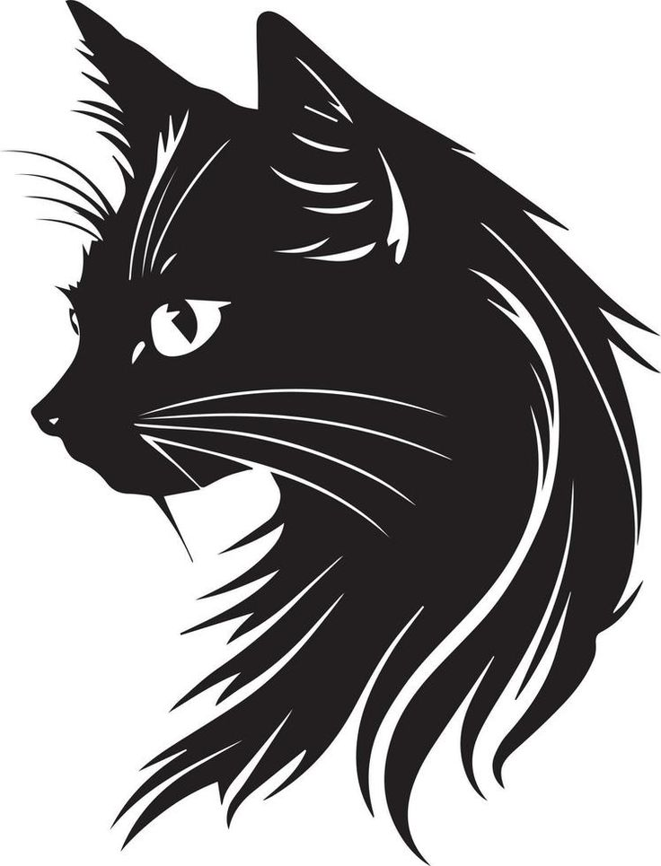
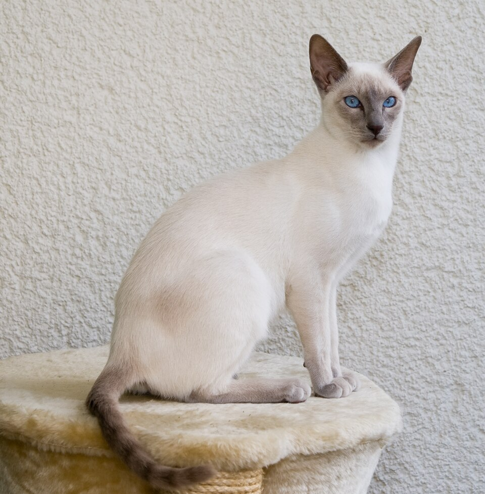
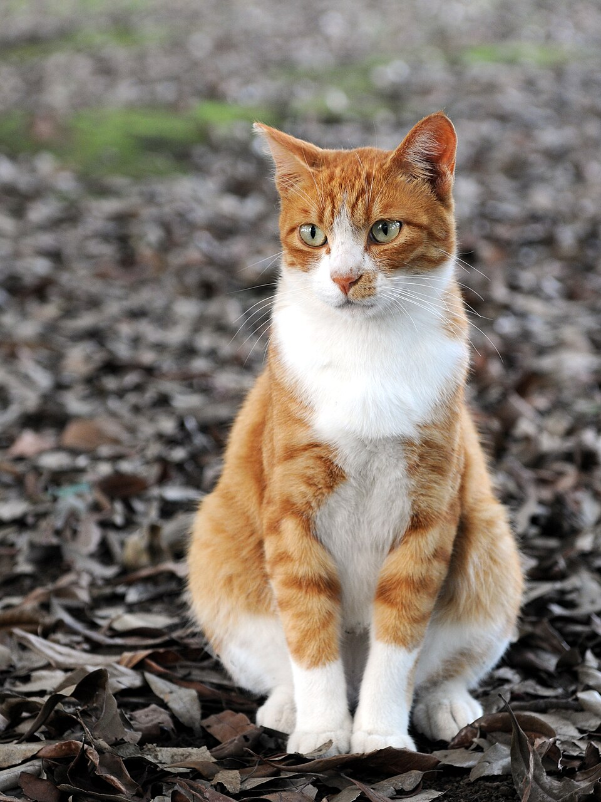

CatCat
Cats are small domesticated mammals that are popular pets around the world. They are known for their agility, independence, curiosity, and playful behavior.
More..Siamese Cat (แมววิเชียรมาศ)
Siamese cats, also known as Wichien Maat, originated in Thailand. They are known for their beautiful blue eyes, short cream-colored coat, and dark points on their face, ears, paws, and tail. They are intelligent, affectionate, playful, and social cats.
Origin: Thailand
Coat: Short, cream with dark points
Eyes: Blue
Personality: Intelligent, social, affectionate
Lifespan: Approximately 12-20 years

More..
Domestic Cat (แมวพื้นบ้าน)
Domestic cats are common household cats with diverse ancestry. They come in many different colors, patterns, and body sizes. They are adaptable, curious, and playful. Their personalities vary from cat to cat.
Origin: Worldwide
Coat: Various colors and patterns
Eyes: Various colors
Personality: Curious, playful, adaptable
Lifespan: Approximately 12-18 years

More..